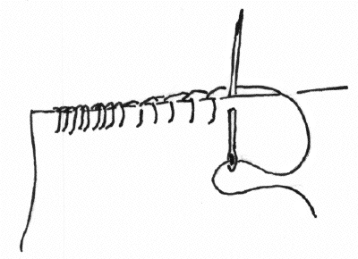

Strawberry Cream Roll
Step 5 of 5
Stuff the roll, then sew the opening closed with blanket stitch.
Also helpful:
- Blanket stitch
- Tying off hand sewing


Stuff the roll, then sew the opening closed with blanket stitch.
Also helpful:
A decorative stitch visible on both sides, traditionally used to reinforce the edge of thick materials such as blankets.
